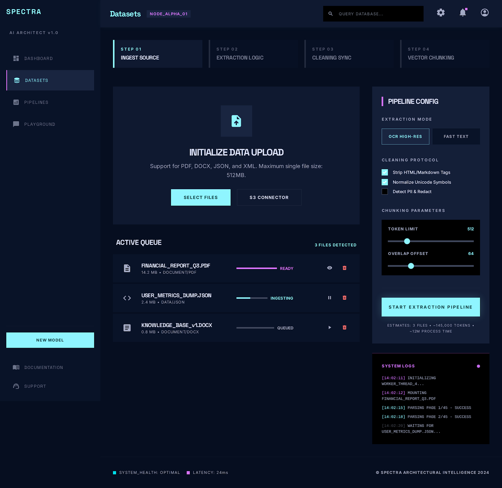
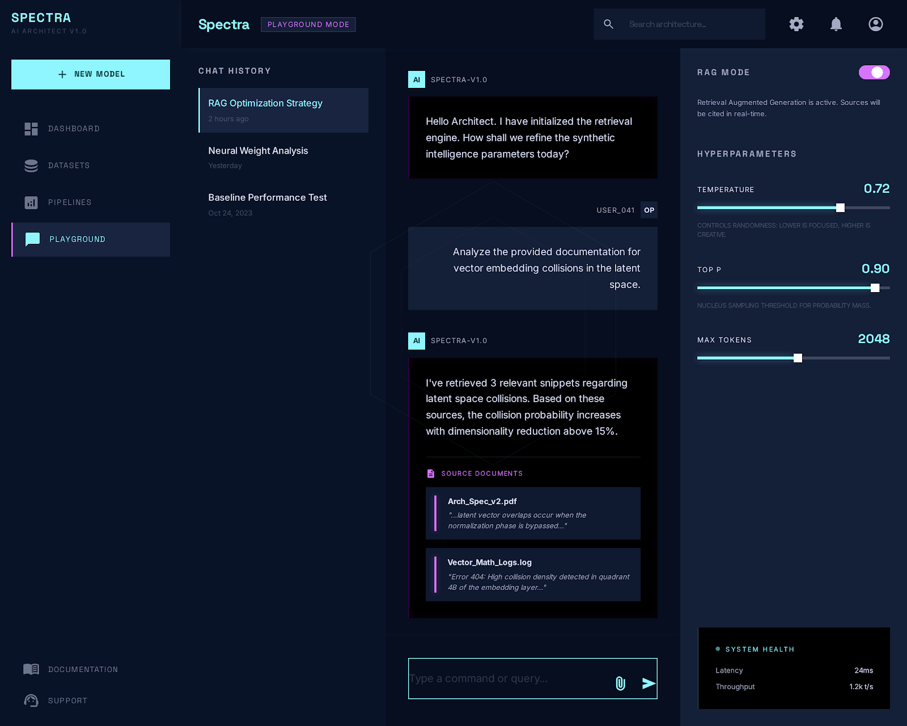
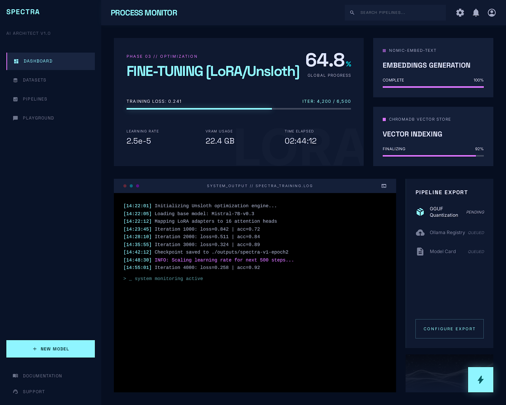
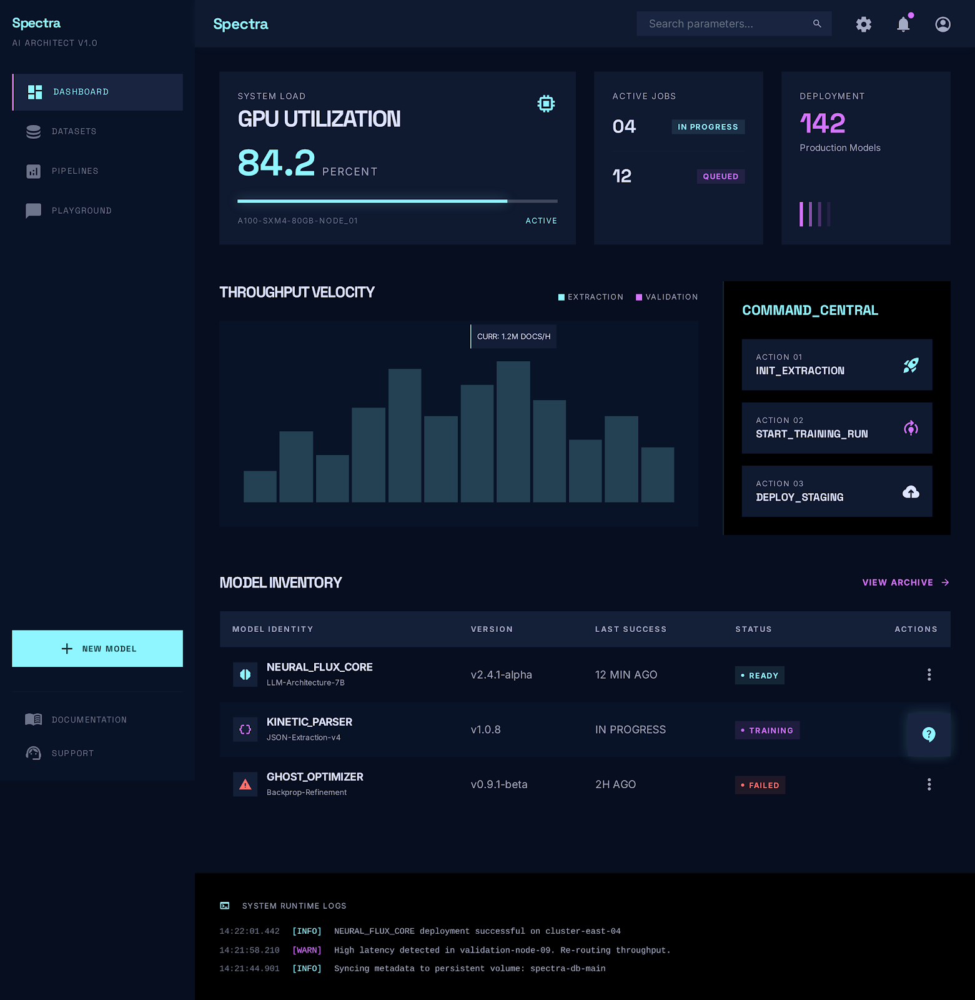

Construisez votre expertise IA souveraine
Transformez vos documents métier en un assistant IA spécialisé. 100 % local. Zéro Cloud. Zéro compromis sur la confidentialité.

Transformez vos documents métier en un assistant IA spécialisé. 100 % local. Zéro Cloud. Zéro compromis sur la confidentialité.
Spectra est un **Domain LLM Builder**. Contrairement aux assistants IA généralistes, il est conçu pour devenir un expert de **votre** domaine métier en utilisant **votre** documentation interne.
L'IA "lit" vos documents en temps réel pour répondre à une question, garantissant des réponses sourcées et à jour.
L'IA "apprend" en permanence votre jargon et vos spécificités métier pour améliorer sa compréhension globale via QLoRA.
Fonctionne 100 % en local. Aucune donnée ne quitte votre infrastructure. Idéal pour les données sensibles.

Transformation des PDF complexes en Markdown via IBM Docling ou PyMuPDF4LLM pour préserver la structure (tableaux, titres).
Normalisation Unicode, suppression des en-têtes/pieds de page, correction OCR et nettoyage des tableaux ASCII.
Découpage intelligent en morceaux de 512 tokens avec "sliding window" de 64 tokens pour ne jamais perdre le contexte.
Conversion du texte en vecteurs mathématiques via Nomic Embed, stockés dans ChromaDB pour une recherche instantanée.
Trouver l'aiguille dans la botte de foin grâce à une combinaison d'algorithmes éprouvés.
Combine la Recherche Vectorielle (sens) et BM25 (mots-clés) via Reciprocal Rank Fusion pour un équilibre parfait entre sens global et précision technique.
Un modèle IA expert analyse en profondeur les 20 meilleurs candidats pour ne conserver que les plus pertinents avant la génération.
Pour les questions complexes, Spectra active une boucle de raisonnement : le LLM peut décider d'effectuer plusieurs recherches affinées successives.

Le RAG permet de répondre, mais le fine-tuning permet au modèle de **devenir** l'expert de votre domaine.
Génération auto de paires Q&A et DPO à partir de vos documents avec garde de qualité Jaccard.
Entraînement ultra-rapide sur des "modules de mémoire" (LoRA) pour une efficacité maximale sur matériel local.
Évaluez les réponses (👍/👎) pour déclencher un ré-entraînement automatique qui affine les préférences du modèle.

Spectra analyse au démarrage votre CPU, RAM et GPU (NVIDIA, AMD ou Vulkan) pour configurer dynamiquement les paramètres optimaux de `llama-server` (threads, couches GPU, taille du contexte).

Traduction d'un texte en une liste de nombres représentant son sens sémantique.
Algorithme de recherche par mots-clés (statistiques sur la fréquence des termes).
Méthode mathématique pour fusionner deux classements différents (Vecteur + BM25).
Modèle IA expert qui compare précisément une question et un document pour les trier.
Méthode d'entraînement ultra-efficace qui ne modifie que quelques paramètres du modèle.
Stratégie où l'IA alterne entre réflexion et action (recherche documentaire).